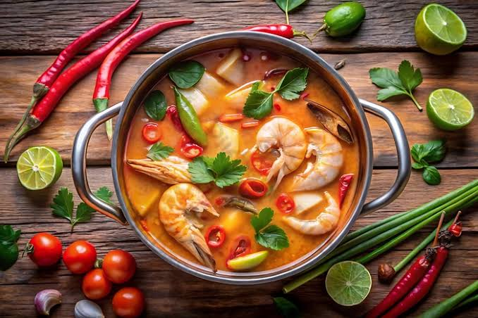
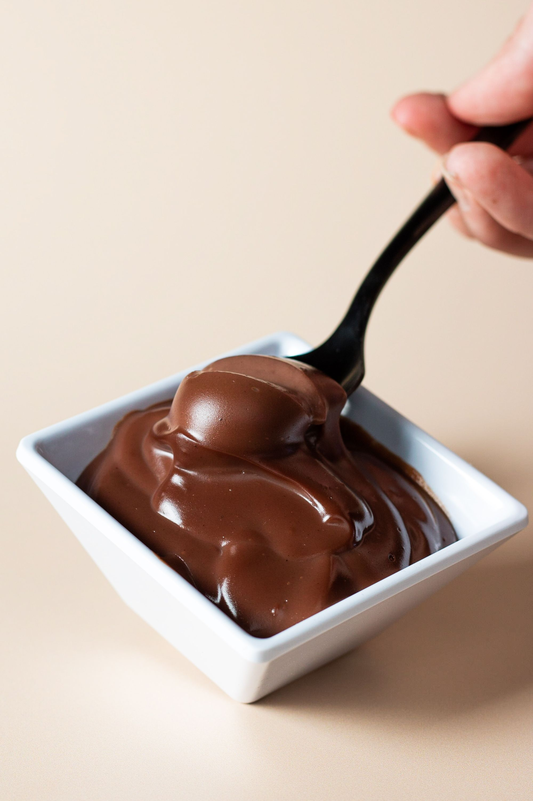
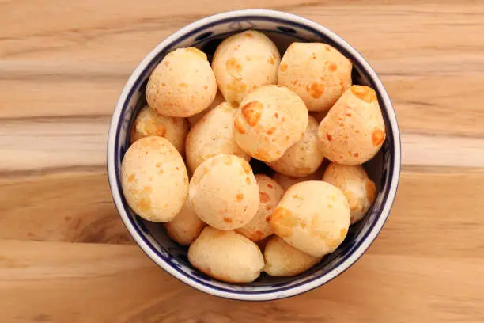
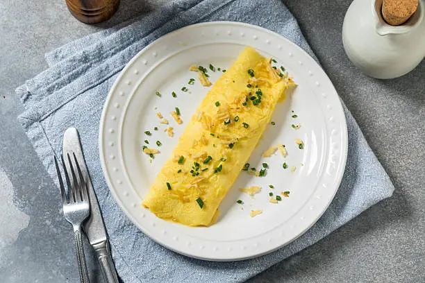

Escondidinho de Carne Seca
45 min | Médio
Não sabe o que preparar hoje? No Sabor em Minutos você encontra receitas simples, saborosas e práticas para qualquer momento do dia.
Escolha de acordo com o tempo que você tem disponível e encontre desde refeições completas até lanches e sobremesas rápidas.

45 min | Médio

30 min | Fácil

10 min | Fácil

25 min | Fácil
Selecione quanto tempo você tem disponível.
Encontre receitas do seu nível de habilidade.
Siga o passo a passo e compartilhe sua experiência.
8 min

10 min
7 min